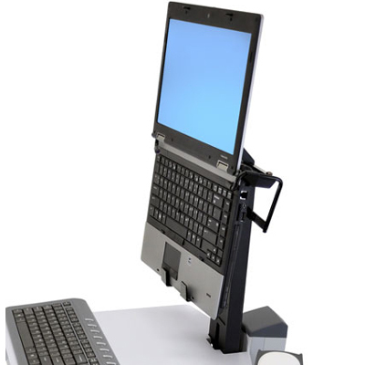

For other news!
What we'll be looking for in laptops for 2017?
Accordingly, our platonic ideal of what a laptop computer should be has shifted somewhat. As we head into 2017 and all the systems that will ...
continue
If you're buying a new Apple MacBook laptop, here's what you..
Apple's newest MacBook Pro laptops have been met with mixed reviews. Some are concerned that the laptops are underpowered for the price ...
continue
Best Affordable Laptops At Around $800 And Less
Laptops are some of the most important purchases a person can buy. Not only do these devices help people in their more tedious tasks, ...
continue